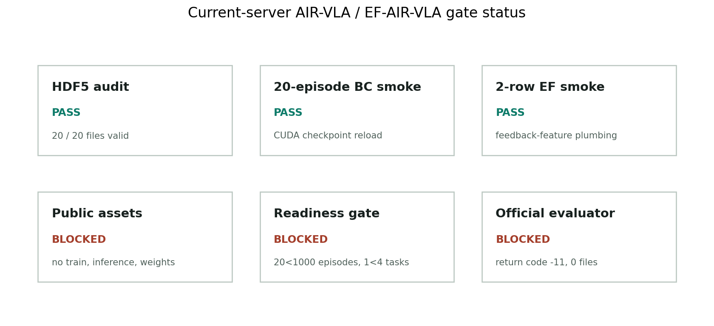
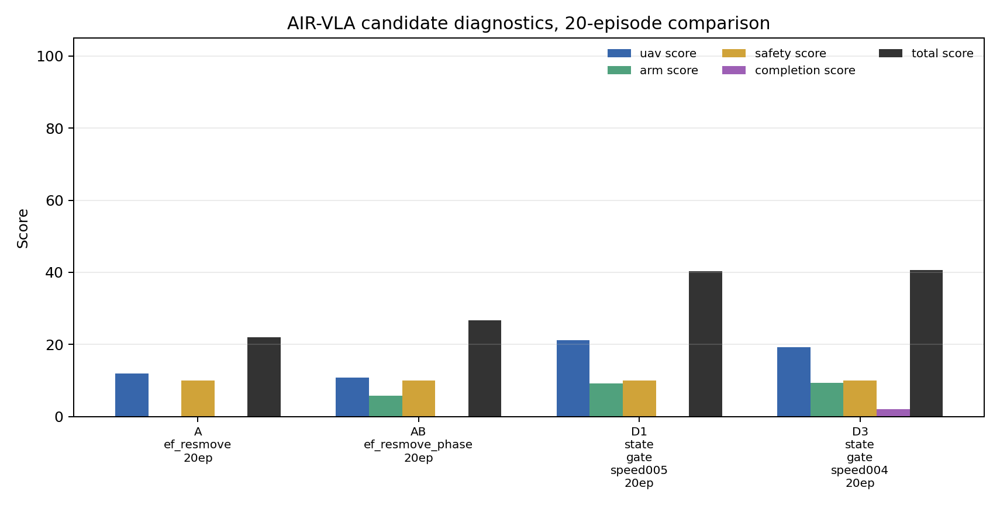
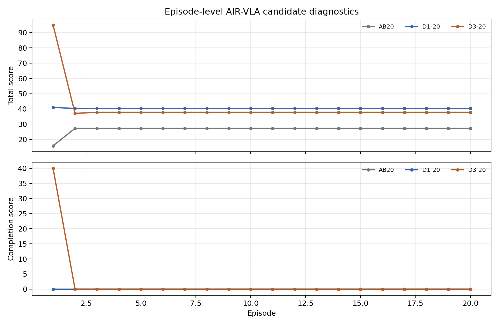
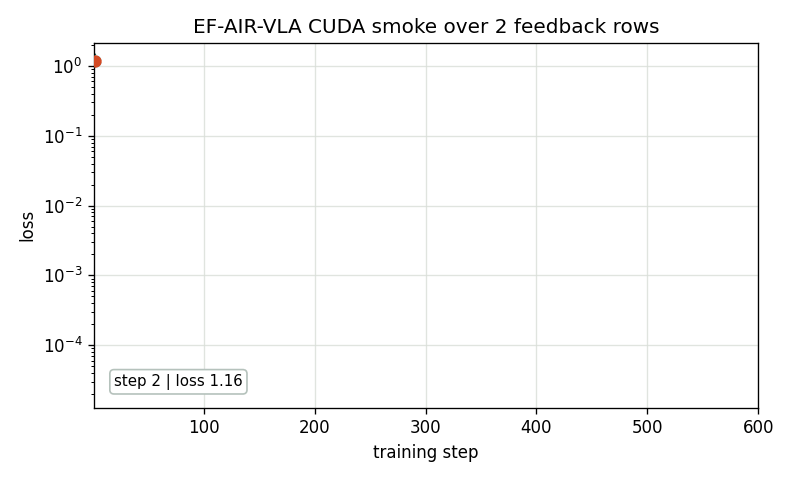

Subset Audit
Open and check the 20 available AIR-VLA HDF5 files before any learning smoke.
Work4 RTX5090 server sweep
A bounded AIR-VLA and EF-AIR-VLA project page built from real server logs, metric tables, loss curves, and evaluator rollout media.
This page records the current Work4 server evidence for AIR-VLA reproduction and Execution-Feedback AIR-VLA design. The HDF5 audit, BC smoke, feedback smoke, evaluator diagnostics, and D1 to D3 candidate runs are all linked to local artifacts.
The current result is an engineering diagnostic rather than a performance claim. Official training code, policy inference assets, checkpoints, broad data coverage, and a stable full evaluator are still missing.
The page follows a paper-project layout while keeping every claim tied to evidence paths and truth levels.
Open and check the 20 available AIR-VLA HDF5 files before any learning smoke.
Train a small CUDA model from state means to action means over all 20 HDF5 episodes.
Join state means with execution-feedback fields and test checkpoint, resume, and inference.
Block long training until public assets, dataset coverage, evaluator stability, and checkpoints exist.
All numbers below are smoke or gate measurements. No row is a paper-level performance result.

Small-scale AIR-VLA diagnostics show that action timing and UAV-target distance must be coupled before placement repair can be meaningful.

p_hat[t+1] = p_hat[t] + clip(p_obj - p_hat[t], Delta_max)
g[t] = 1[d_min <= ||p_hat[t] - p_obj|| <= d_max]
a_grip[t] = close if g[t] = 1, otherwise hold
Delta_max = 0.04 m, d_min = 0.50 m, d_max = 0.80 m
J = S_uav + S_arm + S_safe + S_complete with post-close transfer T(t - tau_g)


Training media comes from current-server loss CSV files. Testing media comes from complete AIR-VLA evaluator diagnostic MP4 files already synchronized in Work4.
Candidate clips in the iteration section are 4.0 s loops from real evaluator frames. Full testing GIFs below keep the original 10.0 s diagnostic clips and the 30.0 s montage.



The page uses source files from the Work4 evidence ledger and the current-server goal sweep.
| Artifact | Truth level | Role |
|---|---|---|
| air_vla_current_server_goal_experiment_sweep_20260627.md | air_vla_current_server_d0_d1_goal_sweep_no_performance_claim | Primary report |
| air_vla_hdf5_bc_smoke_summary.json | air_vla_hdf5_bc_d0_smoke_no_performance_claim | 20-episode CUDA smoke |
| ef_air_vla_d0_model_smoke_summary.json | ef_air_vla_d0_model_smoke_no_performance_claim | 2-row feedback smoke |
| air_vla_full_reproduction_readiness_summary.json | air_vla_full_reproduction_readiness_audit_no_training | Blocked reproduction gate |